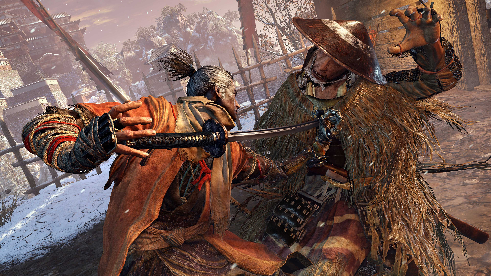

More Action packed games

Platform: PlayStation 4, PC
Overview:
This game reinvents the classic God of War series by blending intense combat with a deeply emotional narrative. The game features a third-person perspective, with Kratos wielding a magical axe and facing off against Norse mythology's creatures and gods.

2. Sekiro: Shadows Die Twice (2019)Platform: PlayStation 4, Xbox One, PC
Overview:
Developed by FromSoftware, Sekiro is known for its challenging gameplay. It focuses on precise swordplay, stealth, and a unique posture system to break enemy defenses. The game’s setting is a fantastical version of Sengoku-period Japan.
3.The Last of Us Part II (2020)
Platform: PlayStation 4, PlayStation 5
Overview:
This action-adventure game is lauded for its storytelling, character development, and intense combat mechanics. It follows Ellie’s journey of revenge and survival in a post-apocalyptic world.
Platform: PlayStation 4, PlayStation 5
Overview:
This action-adventure game is lauded for its storytelling, character development, and intense combat mechanics. It follows Ellie’s journey of revenge and survival in a post-apocalyptic world.

Platform: PlayStation 4, Xbox One, PC
Overview:
Devil May Cry 5 is an action-packed game known for its stylish combat. Players can control three different characters, each with a unique combat style, to battle demons in a story-driven campaign.

Platform: PlayStation 4, Xbox One, PC
Overview:
The final installment of the Dark Souls series, Dark Souls III, continues the tradition of challenging combat, intricate level design, and deep lore. The game is known for its difficulty and rewarding gameplay.